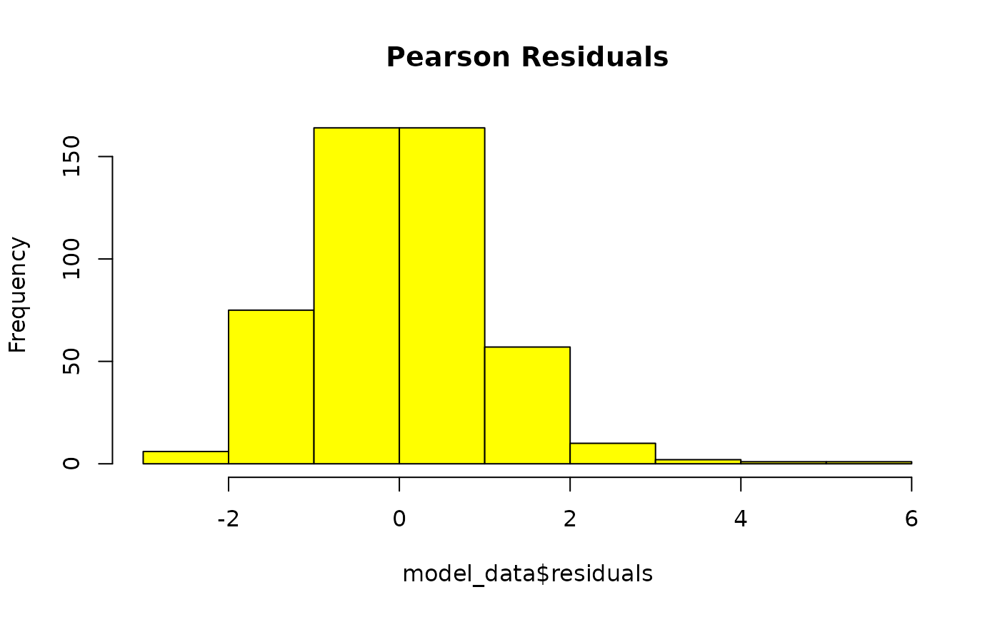

MutSeqR: Analysing Genomic Targets
Annette E. Dodge
Environmental Health Science and Research Bureau, Health Canada, Ottawa, ON, Canada.Matthew J. Meier
matthew.meier@hc-sc.gc.ca Source:vignettes/articles/Target_Analysis.Rmd
Target_Analysis.RmdIn this vignette, we will provide examples on how to perform an analysis of mutation frequencies across a panel of genomic targets. We are using TwinStrand’s Mouse Mutagenesis Panel as an example which consists of 20 2.4kb targets; one on each autosome, with the exeption of chromosome 1 which has 2 targets (chr1 & chr1.2).
The example data is taken from @leblanc-2022. This data consists of 24 mouse bone marrow samples sequenced with Duplex Sequencing. Mice were exposed to three doses of benzo[a]pyrene (BaP) alongside vehicle controls, n = 6. The goal of this project was to quntify the mutagenic effects of BaP in mouse bone marrow. Example data is retrieved from MutSeqRData, an ExperimentHub data package available via Bioconductor. Example data is retrieved from the ExperimentHub index (eh) through specific accessors.
Load MutSeqR and Example Data
library(MutSeqR)
library(ExperimentHub)
# load the index
eh <- ExperimentHub()Generalized Linear Modeling by Target
Model by Target
We will measure the effect of genomic target and BaP dose on mutation
frequency (MF) using a generalized linear mixed model using
model_mf(). We will determine whether the MF of each BaP
dose group is significantly different from the Control individually for
all 20 genomic targets. In this model, dose group and target label will
be our fixed effects. We include the interaction between the two fixed
effects. Sample will be used as a random effect to control for repeated
measurements.
First, load the example data. This mutation data has already
undergone necessary filtering with filter_mut (demonstrated
in the vignette; MutSeqR Introduction). We will then calculate MF for
each sample and genomic locus, while retaining the dose column. The
“label” column refers to the label of the genomic target.
example_data <- eh[["EH9861"]]
mf_data_rg <- calculate_mf(
mutation_data = example_data,
cols_to_group = c("sample", "label"),
subtype_resolution = "none",
retain_metadata_cols = "dose_group"
)Next, create a contrasts table that compares each dose group back to the control for each genomic locus:
combinations <- expand.grid(dose_group = unique(mf_data_rg$dose_group),
label = unique(mf_data_rg$label))
combinations <- combinations[combinations$dose_group != "Control", ]
combinations$col1 <- with(combinations, paste(dose_group, label, sep = ":"))
combinations$col2 <- with(combinations, paste("Control", label, sep = ":"))
contrasts2 <- combinations[, c("col1", "col2")]Finally, run the model. As this model is more complex, we will
improve covergence by supplying the control argument, which is passed
directly to lme4::glmer().
model_by_target <- model_mf(mf_data = mf_data_rg,
fixed_effects = c("dose_group", "label"),
test_interaction = TRUE,
random_effects = "sample",
muts = "sum_min",
total_count = "group_depth",
contrasts = contrasts2,
reference_level = c("Control", "chr1"),
control = lme4::glmerControl(optimizer = "bobyqa",
optCtrl = list(maxfun = 2e5))
)Residuals Histogram

GLMM residuals of MFmin modelled as an effect of Dose and Genomic Target. x is pearson’s residuals, y is frequency. Plotted to validate model assumptions. n = 24.
Residuals QQ-plot

GLMM residuals of MFmin modelled as an effect of Dose and Genomic Target expressed as a quantile-quantile plot. Y is the pearson’s residuals of the model in ascending order x is the quantiles of standard normal distribution for n of 24. Plotted to validate model assumptions.
Model Summary
model_by_target$summary## Generalized linear mixed model fit by maximum likelihood (Laplace
## Approximation) [glmerMod]
## Family: binomial ( logit )
## Formula: cbind(sum_min, group_depth) ~ dose_group * label + (1 | sample)
## Data: mf_data
## Control: ..1
##
## AIC BIC logLik -2*log(L) df.resid
## 2825.5 3163.6 -1331.7 2663.5 399
##
## Scaled residuals:
## Min 1Q Median 3Q Max
## -2.7513 -0.7140 -0.0326 0.6138 5.4812
##
## Random effects:
## Groups Name Variance Std.Dev.
## sample (Intercept) 0.01088 0.1043
## Number of obs: 480, groups: sample, 24
##
## Fixed effects:
## Estimate Std. Error z value Pr(>|z|)
## (Intercept) -1.596e+01 2.222e-01 -71.807 < 2e-16 ***
## dose_groupHigh 1.903e+00 2.395e-01 7.947 1.92e-15 ***
## dose_groupLow 6.208e-01 2.738e-01 2.267 0.023380 *
## dose_groupMedium 1.293e+00 2.612e-01 4.951 7.39e-07 ***
## labelchr1.2 1.382e-01 2.824e-01 0.489 0.624624
## labelchr10 4.517e-01 2.682e-01 1.684 0.092109 .
## labelchr11 8.366e-01 2.641e-01 3.168 0.001535 **
## labelchr12 5.183e-01 2.660e-01 1.948 0.051365 .
## labelchr13 1.984e-02 2.908e-01 0.068 0.945593
## labelchr14 6.560e-01 2.671e-01 2.456 0.014043 *
## labelchr15 5.084e-01 2.660e-01 1.911 0.056012 .
## labelchr16 7.757e-01 2.693e-01 2.881 0.003970 **
## labelchr17 4.593e-01 2.885e-01 1.592 0.111307
## labelchr18 -7.519e-03 2.958e-01 -0.025 0.979721
## labelchr19 -2.378e-01 3.084e-01 -0.771 0.440585
## labelchr2 6.258e-01 2.660e-01 2.352 0.018661 *
## labelchr3 2.568e-01 2.863e-01 0.897 0.369732
## labelchr4 5.106e-01 2.773e-01 1.841 0.065603 .
## labelchr5 4.209e-01 2.824e-01 1.490 0.136186
## labelchr6 2.937e-01 2.806e-01 1.046 0.295350
## labelchr7 -3.983e-04 2.958e-01 -0.001 0.998926
## labelchr8 4.383e-01 2.908e-01 1.507 0.131704
## labelchr9 7.000e-01 2.671e-01 2.621 0.008766 **
## dose_groupHigh:labelchr1.2 -2.483e-01 3.022e-01 -0.822 0.411347
## dose_groupLow:labelchr1.2 -2.540e-03 3.459e-01 -0.007 0.994141
## dose_groupMedium:labelchr1.2 -2.494e-02 3.289e-01 -0.076 0.939548
## dose_groupHigh:labelchr10 -4.750e-01 2.882e-01 -1.648 0.099285 .
## dose_groupLow:labelchr10 -3.356e-01 3.360e-01 -0.999 0.317857
## dose_groupMedium:labelchr10 -3.318e-01 3.167e-01 -1.048 0.294861
## dose_groupHigh:labelchr11 -5.554e-02 2.809e-01 -0.198 0.843268
## dose_groupLow:labelchr11 4.252e-01 3.174e-01 1.340 0.180390
## dose_groupMedium:labelchr11 4.359e-01 3.029e-01 1.439 0.150068
## dose_groupHigh:labelchr12 -1.676e-01 2.836e-01 -0.591 0.554373
## dose_groupLow:labelchr12 -1.544e-01 3.287e-01 -0.470 0.638477
## dose_groupMedium:labelchr12 -1.756e-01 3.115e-01 -0.564 0.572958
## dose_groupHigh:labelchr13 -3.978e-01 3.125e-01 -1.273 0.202970
## dose_groupLow:labelchr13 2.170e-03 3.561e-01 0.006 0.995138
## dose_groupMedium:labelchr13 -2.386e-01 3.425e-01 -0.697 0.486037
## dose_groupHigh:labelchr14 1.207e-01 2.832e-01 0.426 0.670094
## dose_groupLow:labelchr14 2.822e-01 3.228e-01 0.874 0.381936
## dose_groupMedium:labelchr14 4.877e-01 3.055e-01 1.596 0.110378
## dose_groupHigh:labelchr15 -1.145e+00 2.935e-01 -3.903 9.51e-05 ***
## dose_groupLow:labelchr15 -4.122e-01 3.348e-01 -1.231 0.218290
## dose_groupMedium:labelchr15 -6.712e-01 3.214e-01 -2.088 0.036792 *
## dose_groupHigh:labelchr16 -2.607e-01 2.878e-01 -0.906 0.364977
## dose_groupLow:labelchr16 1.133e-01 3.279e-01 0.346 0.729681
## dose_groupMedium:labelchr16 6.542e-02 3.125e-01 0.209 0.834154
## dose_groupHigh:labelchr17 1.326e-01 3.059e-01 0.434 0.664586
## dose_groupLow:labelchr17 3.705e-01 3.457e-01 1.072 0.283845
## dose_groupMedium:labelchr17 3.523e-01 3.308e-01 1.065 0.286780
## dose_groupHigh:labelchr18 3.822e-01 3.118e-01 1.226 0.220225
## dose_groupLow:labelchr18 4.491e-01 3.525e-01 1.274 0.202678
## dose_groupMedium:labelchr18 5.986e-01 3.347e-01 1.789 0.073665 .
## dose_groupHigh:labelchr19 6.478e-02 3.273e-01 0.198 0.843111
## dose_groupLow:labelchr19 3.157e-01 3.689e-01 0.856 0.392152
## dose_groupMedium:labelchr19 3.342e-01 3.522e-01 0.949 0.342680
## dose_groupHigh:labelchr2 -6.041e-01 2.869e-01 -2.106 0.035210 *
## dose_groupLow:labelchr2 -2.459e-01 3.312e-01 -0.742 0.457836
## dose_groupMedium:labelchr2 -2.993e-01 3.138e-01 -0.954 0.340146
## dose_groupHigh:labelchr3 -1.072e+00 3.178e-01 -3.375 0.000739 ***
## dose_groupLow:labelchr3 -5.817e-01 3.701e-01 -1.572 0.116009
## dose_groupMedium:labelchr3 -6.911e-01 3.503e-01 -1.973 0.048510 *
## dose_groupHigh:labelchr4 -2.788e-01 2.967e-01 -0.940 0.347321
## dose_groupLow:labelchr4 -1.492e-01 3.434e-01 -0.435 0.663885
## dose_groupMedium:labelchr4 -5.001e-02 3.234e-01 -0.155 0.877121
## dose_groupHigh:labelchr5 -2.603e-01 3.023e-01 -0.861 0.389180
## dose_groupLow:labelchr5 -4.738e-02 3.471e-01 -0.136 0.891432
## dose_groupMedium:labelchr5 -1.236e-01 3.312e-01 -0.373 0.709068
## dose_groupHigh:labelchr6 -2.353e-01 2.999e-01 -0.785 0.432557
## dose_groupLow:labelchr6 -4.394e-02 3.448e-01 -0.127 0.898606
## dose_groupMedium:labelchr6 -2.395e-01 3.307e-01 -0.724 0.468894
## dose_groupHigh:labelchr7 1.376e-01 3.131e-01 0.439 0.660386
## dose_groupLow:labelchr7 4.021e-01 3.530e-01 1.139 0.254618
## dose_groupMedium:labelchr7 5.092e-01 3.355e-01 1.518 0.129058
## dose_groupHigh:labelchr8 2.822e-01 3.074e-01 0.918 0.358623
## dose_groupLow:labelchr8 5.457e-01 3.454e-01 1.580 0.114098
## dose_groupMedium:labelchr8 6.388e-01 3.299e-01 1.936 0.052824 .
## dose_groupHigh:labelchr9 -4.547e-01 2.867e-01 -1.586 0.112740
## dose_groupLow:labelchr9 -1.701e-01 3.304e-01 -0.515 0.606713
## dose_groupMedium:labelchr9 -4.265e-01 3.172e-01 -1.345 0.178701
## ---
## Signif. codes: 0 '***' 0.001 '**' 0.01 '*' 0.05 '.' 0.1 ' ' 1ANOVA
model_by_target$anova## Analysis of Deviance Table (Type II Wald chisquare tests)
##
## Response: cbind(sum_min, group_depth)
## Chisq Df Pr(>Chisq)
## dose_group 600.61 3 < 2.2e-16 ***
## label 1239.68 19 < 2.2e-16 ***
## dose_group:label 129.41 57 1.493e-07 ***
## ---
## Signif. codes: 0 '***' 0.001 '**' 0.01 '*' 0.05 '.' 0.1 ' ' 1Model Estimates
Table 20. model_by_target$point_estimates: Estimated Mean Mutation Frequency per Dose and Genomic Target.
Plot Model by Dose and Target
# Define the order of the genomic targets for the x-axis:
# We will order them from lowest to highest MF at the High dose.
label_order <- model_by_target$point_estimates %>%
dplyr::filter(dose_group == "High") %>%
dplyr::arrange(Estimate) %>%
dplyr::pull(label)
# Define the order of the doses for the fill
dose_order <- c("Control", "Low", "Medium", "High")
plot <- plot_model_mf(
model = model_by_target,
plot_type = "bar",
x_effect = "label",
plot_error_bars = TRUE,
plot_signif = TRUE,
ref_effect = "dose_group",
x_order = label_order,
fill_order = dose_order,
x_label = "Target",
y_label = "Mutation Frequency (mutations/bp)",
fill_label = "Dose",
plot_title = "",
custom_palette = c("#ef476f",
"#ffd166",
"#06d6a0",
"#118ab2")
)
# Rotate the x-axis labels for clarity using ggplot2 functions.
plot <- plot + ggplot2::theme(axis.text.x = ggplot2::element_text(angle = 90))
plot
Mean Mutation Frequency Minimum (mutations/bp) per Genomic Target and Dose estimated using a generalized linear mixed model. Error bars are the SEM. Symbols indicate significance differences (p < 0.05) between dose levels for individual genomic regions.
Retrieve Sequences of Target regions
get_seq() will retrive raw nucleotide sequences for
specified genomic intervals. The function can retrieve sequences in one
of two ways. Either specify an installed BSgenome from which to retrieve
sequences or retrieve sequences through API request to the UCSC database
based on supplied species and genome assembly.
Supply regions with a filepath, data frame or GRanges object containing the specified genomic intervals. TwinStrand’s Mutagenesis Panels are stored in package files and can easily be retrieved.
Supply the function with the appropriate BS_genome from which to retrieve sequences. You can use the find_BS_genome() function to identify a BS genome to use based on species and genome assembly. Be sure to install the BS genome prior to running get_seq() with BiocManager().
To retrieve sequences from the UCSC data base, please input the species and assembly genome to the species and genome parameters.
*BS_genome, species, or genome do not need to be specified for the Mutagenesis Panels as this information is stored.
Sequences are returned within a GRanges object.
Example 2.1. Retrieve the sequences for our example’s target panel, TwinStrand’s Mouse Mutagenesis Panel
regions_seq <- get_seq(regions = "TSpanel_mouse")
regions_seq## GRanges object with 20 ranges and 6 metadata columns:
## seqnames ranges strand | target_size label
## <Rle> <IRanges> <Rle> | <integer> <character>
## [1] chr1 69304218-69306617 * | 2400 chr1
## [2] chr1 155235939-155238338 * | 2400 chr1.2
## [3] chr2 50833176-50835575 * | 2400 chr2
## [4] chr3 109633161-109635560 * | 2400 chr3
## [5] chr4 96825281-96827680 * | 2400 chr4
## ... ... ... ... . ... ...
## [16] chr15 66779763-66782162 * | 2400 chr15
## [17] chr16 72381581-72383980 * | 2400 chr16
## [18] chr17 94009029-94011428 * | 2400 chr17
## [19] chr18 81262079-81264478 * | 2400 chr18
## [20] chr19 4618814-4621213 * | 2400 chr19
## genic_context region_GC_content genome sequence
## <character> <numeric> <character> <DNAStringSet>
## [1] intergenic 37.3 mm10 CAATCTTTCT...CAAAATGCAA
## [2] genic 54.0 mm10 AATCTCCAGG...CAAGCACTGG
## [3] intergenic 45.3 mm10 TGTGCCCCAT...TGCTTGCCAC
## [4] genic 39.2 mm10 AACGATGAAT...GCACTCAAGA
## [5] intergenic 39.4 mm10 ATTGTTTGAA...CTCAGGGCCT
## ... ... ... ... ...
## [16] genic 44.0 mm10 GTGTCATTTT...CAGGTAGAGG
## [17] intergenic 38.3 mm10 TCTGTAGCAA...ATAAAAACTC
## [18] intergenic 35.2 mm10 TAAGGAAACT...TATCAAAGAT
## [19] intergenic 47.3 mm10 AGCCATCTCC...GGGACTCAGA
## [20] genic 56.1 mm10 TCCAGGCTGT...GCCCATGGAG
## -------
## seqinfo: 19 sequences from an unspecified genome; no seqlengthsExample 2.2. Retrieve sequences for a custom interval of regions. We will use the Human Mutagenesis Panel as an example.
# We will load the TSpanel_human regions file to obtain
# an example list of regions.
human <- load_regions_file("TSpanel_human")
regions_seq <- get_seq(regions = human,
is_0_based_rg = FALSE,
BS_genome = find_BS_genome("human", "hg38"),
padding = 0)
regions_seq## GRanges object with 20 ranges and 7 metadata columns:
## seqnames ranges strand | target_size description
## <Rle> <IRanges> <Rle> | <integer> <character>
## [1] chr11 108510788-108513187 * | 2400 region_1111
## [2] chr13 75803913-75806312 * | 2400 region_1501
## [3] chr14 74661756-74664155 * | 2400 region_1725
## [4] chr18 5749265-5751664 * | 2400 region_2457
## [5] chr2 40162768-40165167 * | 2400 region_2896
## ... ... ... ... . ... ...
## [16] chr15 46089738-46092137 * | 2400 region_1904
## [17] chr17 70672727-70675126 * | 2400 region_2378
## [18] chr21 23665977-23668376 * | 2400 region_3515
## [19] chr22 48262371-48264770 * | 2400 region_3703
## [20] chr10 128969038-128971437 * | 2400 region_784
## genic_context gene genome label
## <character> <character> <character> <character>
## [1] genic EXPH5 hg38 chr11
## [2] genic LMO7 hg38 chr13
## [3] genic AREL1 hg38 chr14
## [4] genic MIR3976HG hg38 chr18
## [5] genic SLC8A1-AS1 hg38 chr2
## ... ... ... ... ...
## [16] intergenic <NA> hg38 chr15
## [17] intergenic <NA> hg38 chr17
## [18] intergenic <NA> hg38 chr21
## [19] intergenic <NA> hg38 chr22
## [20] intergenic <NA> hg38 chr10
## sequence
## <DNAStringSet>
## [1] GTTTCCTTCA...CTTTCCTGGA
## [2] AGAATTATTT...TCAGACAACC
## [3] TTCCCTGGTT...AAGATACACT
## [4] TGGCAACTTG...AATGAAAACA
## [5] CTAGATTTTC...AGCATATCAC
## ... ...
## [16] TGAACAGACA...ATAAATTGCT
## [17] GTGGTGATCA...TAAAGATTCT
## [18] TGTAATAATG...TCCAGTCATT
## [19] GTAAAGGCAG...TCCACAGCAG
## [20] GTGGACTGAT...TTCTCACACT
## -------
## seqinfo: 20 sequences from an unspecified genome; no seqlengthsExample 2.3. Retrieve sequences using UCSC database.
regions_seq <- get_seq(regions = human,
is_0_based_rg = FALSE,
padding = 0,
species = "human",
genome = "hg38",
ucsc = TRUE)Sequences can be exported as FASTA files with
write_reference_fasta(). Supply this function with the
GRanges object containing the sequences of the regions. Each one will be
written to a single FASTA file. The FASTA file will be saved to the
output_path. If NULL, the file will be saved to the working
directory.
write_reference_fasta(regions_seq, output_path = NULL)Appendix
Session Info
## R Under development (unstable) (2025-11-18 r89035)
## Platform: x86_64-pc-linux-gnu
## Running under: Ubuntu 24.04.3 LTS
##
## Matrix products: default
## BLAS: /usr/lib/x86_64-linux-gnu/openblas-pthread/libblas.so.3
## LAPACK: /usr/lib/x86_64-linux-gnu/openblas-pthread/libopenblasp-r0.3.26.so; LAPACK version 3.12.0
##
## locale:
## [1] LC_CTYPE=C.UTF-8 LC_NUMERIC=C LC_TIME=C.UTF-8
## [4] LC_COLLATE=C.UTF-8 LC_MONETARY=C.UTF-8 LC_MESSAGES=C.UTF-8
## [7] LC_PAPER=C.UTF-8 LC_NAME=C LC_ADDRESS=C
## [10] LC_TELEPHONE=C LC_MEASUREMENT=C.UTF-8 LC_IDENTIFICATION=C
##
## time zone: UTC
## tzcode source: system (glibc)
##
## attached base packages:
## [1] stats4 stats graphics grDevices utils datasets methods
## [8] base
##
## other attached packages:
## [1] BSgenome.Hsapiens.UCSC.hg38_1.4.5 GenomeInfoDb_1.47.0
## [3] BSgenome.Mmusculus.UCSC.mm10_1.4.3 BSgenome_1.79.1
## [5] rtracklayer_1.71.0 BiocIO_1.21.0
## [7] Biostrings_2.79.2 XVector_0.51.0
## [9] GenomicRanges_1.63.0 Seqinfo_1.1.0
## [11] IRanges_2.45.0 S4Vectors_0.49.0
## [13] ExperimentHub_3.1.0 AnnotationHub_4.1.0
## [15] BiocFileCache_3.1.0 dbplyr_2.5.1
## [17] BiocGenerics_0.57.0 generics_0.1.4
## [19] MutSeqR_0.99.3 htmltools_0.5.8.1
## [21] DT_0.34.0 BiocStyle_2.39.0
##
## loaded via a namespace (and not attached):
## [1] RColorBrewer_1.1-3 ggdendro_0.2.0
## [3] jsonlite_2.0.0 magrittr_2.0.4
## [5] GenomicFeatures_1.63.1 farver_2.1.2
## [7] nloptr_2.2.1 rmarkdown_2.30
## [9] fs_1.6.6 ragg_1.5.0
## [11] vctrs_0.6.5 memoise_2.0.1
## [13] minqa_1.2.8 Rsamtools_2.27.0
## [15] RCurl_1.98-1.17 S4Arrays_1.11.0
## [17] curl_7.0.0 broom_1.0.10
## [19] SparseArray_1.11.2 Formula_1.2-5
## [21] sass_0.4.10 bslib_0.9.0
## [23] htmlwidgets_1.6.4 desc_1.4.3
## [25] httr2_1.2.1 cachem_1.1.0
## [27] GenomicAlignments_1.47.0 lifecycle_1.0.4
## [29] pkgconfig_2.0.3 Matrix_1.7-4
## [31] R6_2.6.1 fastmap_1.2.0
## [33] rbibutils_2.4 MatrixGenerics_1.23.0
## [35] digest_0.6.39 AnnotationDbi_1.73.0
## [37] rprojroot_2.1.1 textshaping_1.0.4
## [39] crosstalk_1.2.2 RSQLite_2.4.4
## [41] filelock_1.0.3 labeling_0.4.3
## [43] httr_1.4.7 abind_1.4-8
## [45] compiler_4.6.0 microbenchmark_1.5.0
## [47] here_1.0.2 bit64_4.6.0-1
## [49] withr_3.0.2 S7_0.2.1
## [51] backports_1.5.0 BiocParallel_1.45.0
## [53] carData_3.0-5 DBI_1.2.3
## [55] MASS_7.3-65 rappdirs_0.3.3
## [57] DelayedArray_0.37.0 rjson_0.2.23
## [59] tools_4.6.0 glue_1.8.0
## [61] restfulr_0.0.16 nlme_3.1-168
## [63] grid_4.6.0 gtable_0.3.6
## [65] tidyr_1.3.1 data.table_1.17.8
## [67] doBy_4.7.0 xml2_1.5.0
## [69] car_3.1-3 Deriv_4.2.0
## [71] BiocVersion_3.23.1 pillar_1.11.1
## [73] stringr_1.6.0 splines_4.6.0
## [75] dplyr_1.1.4 lattice_0.22-7
## [77] bit_4.6.0 tidyselect_1.2.1
## [79] knitr_1.50 reformulas_0.4.2
## [81] bookdown_0.45 SummarizedExperiment_1.41.0
## [83] xfun_0.54 Biobase_2.71.0
## [85] matrixStats_1.5.0 UCSC.utils_1.7.0
## [87] stringi_1.8.7 yaml_2.3.10
## [89] boot_1.3-32 evaluate_1.0.5
## [91] codetools_0.2-20 cigarillo_1.1.0
## [93] tibble_3.3.0 BiocManager_1.30.27
## [95] cli_3.6.5 systemfonts_1.3.1
## [97] Rdpack_2.6.4 jquerylib_0.1.4
## [99] dichromat_2.0-0.1 modelr_0.1.11
## [101] Rcpp_1.1.0 png_0.1-8
## [103] XML_3.99-0.20 parallel_4.6.0
## [105] pkgdown_2.2.0 ggplot2_4.0.1
## [107] blob_1.2.4 plyranges_1.31.1
## [109] bitops_1.0-9 lme4_1.1-37
## [111] VariantAnnotation_1.57.0 scales_1.4.0
## [113] purrr_1.2.0 crayon_1.5.3
## [115] rlang_1.1.6 cowplot_1.2.0
## [117] KEGGREST_1.51.1